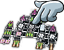
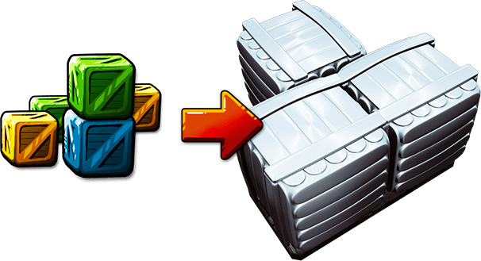

Let

 Každý let sestává z určitého počtu letových karet (v tomto případě z 8).
Každý let sestává z určitého počtu letových karet (v tomto případě z 8).
 Plán letu znázorňuje relativní pozice lodí během letu. Všechny lodě se stále pohybují směrem k cíli stejnou konstantní rychlostí. Po cestě ale můžeš narazit na různé překážky nebo dobrodružství, které způsobí změnu relativních pozic lodí.
Plán letu znázorňuje relativní pozice lodí během letu. Všechny lodě se stále pohybují směrem k cíli stejnou konstantní rychlostí. Po cestě ale můžeš narazit na různé překážky nebo dobrodružství, které způsobí změnu relativních pozic lodí.
Let končí poté, co jsou otočeny (a vyřešeny) všechny letové karty.
Pohled
Můžeš přepínat mezi pohledem na plán letu a detail lodi.
 Pokud chceš vidět loď některého hráče, klikni na jeho avatar.
Pokud chceš vidět loď některého hráče, klikni na jeho avatar.
Nebo klikni přímo na vybranou loď.
Z detailu lodi se vrátíš na zobrazení celého plánu kliknutím na ikonu lupy.
Informační panel
Informační panel je přístupný z pohledu na detail lodi. Zobrazíte jej kliknutím na záložku na spodní straně obrazovky.

Informační panel poskytuje mnoho užitečných informací:
- Jméno pilota.
- Třídu lodi. (Lodě označené vyššími římskými čísly jsou větší.)
- Počet dílků ztracených během letu.
- Částku, kterou bude muset hráč zaplatit za ztracené dílky.
- Odměnu za dokončení letu. (Hráči, kteří doletí více vpřadu, dostanu víc kreditů.)
- Odměnu za nejmenší počet otevřených přípojek.
- Celkovou cenu zboží na palubě.
- Počet členů posádky.
- Počet baterií
 .
. - Sílu motorů.
- Sílu děl.
- Počet otevřených přípojek.
- Tlačítko "Odstoupit z tohoto letu".
Opětovným kliknutím schováš panel zpět dospodu obrazovky.
Letové karty
Události během letu určují letové karty, umístěné v levém horním rohu obrazovky. Karty na tomto příkladu jsou všechny úrovně I. Karty úrovní II a III jsou obtížnější, ale nabízejí větší odměny. Pro let s kartami vyšších úrovní budeš potřebovat větší loď.
Podle rubu horní karty v balíčku si můžeš udělat představu o tom, co přijde příště. Při letu úrovně I jsou všechny karty úrovně I, ale při letech vyšší úrovně jsou karty smíchané z více úrovní. Pokud tedy navrchu balíčku vidíš symbol III, můžeš čekat, že další karta bude znamenat buď velkou odměnu, nebo velké potíže. Nebo oboje.
Kliknutím na balíček odkryješ následující letovou kartu.
Zisk a ztráta letových dnů
Některá dobrodružství mají za následek ztrátu letových dnů. Většina karet nabízejících odměnu má v pravém dolním rohu číslo. To je počet letových dnů, které ztratíš, pokud si odměnu vyzvedneš. Letové dny můžeš také ztratit během průletu Bojovou zónou.
Když ztrácíš letové dny, tvoje loď se na plánu letu pohybuje dozadu. Na jednom poli smí být jen jedna loď, takže pokud ti v cestě stojí jiná loď, musíš ji přeskočit:
Vedoucí hráč
ztrácí 2 dny:
Druhý hráč
ztrácí 2 dny:
Oba hráči
ztrácejí 2 dny:
Stejně tak když letové dny získáváš, pohybuješ se dopředu a opět přeskakuješ lodi, které ti stojí v cestě. Letové dny získáváš na kartě Otevřený vesmír.
Někdy se vyplatí letět vpředu, jindy ne.
Vedoucí hráč si vždycky odměnu vybírá první. Protože se ale odměny pojí se ztrátou letových dnů, je někdy lepší odměnu odmítnout a zůstat před ostatními.
Vedoucí hráč první bojuje s nepřáteli. To je výhodné jen tehdy, pokud jsi dobře vyzbrojen. Hráči letící více vpředu také prohrávají remízy v Bojové zóně. Takže se někdy může vyplatit letět až v zákrytu za ostatními.
Pokud přežiješ až do konce letu, získáš tím vyšší bonus za dokončení letu, čím víc vepředu jsi doletěl. Takže poté, co je zahrána poslední karta, je vždy výhodné být vepředu.
Zisk zboží
Pokud letová karta umožňuje naložení zboží na loď, můžeš jej přetáhnout z dialogového okna přímo do přepravních kontejnerů. Nebo na něj jednoduše klikni a zboží se na loď naloží automaticky.
Snaž se nakládat nejcennější zboží do těch kontejnerů, které pravděpodobně let vydrží a nebudou zničeny.
Kdykoliv když nakládáš nové zboží, můžeš i přeskládat již naložené zboží přetažením do jiných kontejnerů.
Přebytečné zboží musíš vyhodit do vesmíru. Zboží můžeš vrátit do dialogového boxu přetažením nebo kliknutím na dotyčný kontejner.
Ceník ti pomůže rozhodnout se, kterého zboží se zbavit:

Červené zboží je nejcennější, ale je vyrobeno z nebezpečných materiálů a je třeba jej přepravovat ve speciálních červených kontejnerech. Do červených kontejnerů ale můžeš naložit i žluté, zelené a modré zboží.
Dokud máš na lodi dost místa, je výhodné nakládat vše, na co přijdeš, i kdybys měl zabrat červený kontejner levným zbožím. Až budeš nakládat nové zboží, můžeš staré přeskládat nebo vyhodit.
Po naložení (a přeskládání) nákladu klikni na ikonu  pro potvrzení.
pro potvrzení.
Ztráta zboží
Pokud po tobě karta požaduje, aby ses vzdal zboží, nejdříve ztratíš to nejcennější. Útočníci si ho vyberou automaticky a ty ani neovlivníš, z kterého kontejneru si jej odnesou. Jestliže nevezeš dostatek zboží, přijdeš místo zbytku o baterie  . Jestli nemůžeš nabídnou zboží ani baterie
. Jestli nemůžeš nabídnou zboží ani baterie  , nemají ti nepřátelé už co sebrat.
, nemají ti nepřátelé už co sebrat.
Ztráta posádky
Některé karty nabízí odměnu, pokud se vzdáš několika členů posádky. Další vás sebráním několika členů posádky penalizují. V obou případech se v pohledu na detail lodi zvýrazní kabiny, z nichž musíš kliknutím vybrat členy posádky, kterých se vzdáš. Mimozemšťané se také počítají jako členové posádky, takže se jich můžeš vzdát, bude-li třeba. Až dokončíš výběr, klikněte na ikonu  pro potvrzení.
pro potvrzení.
Jestliže ti na lodi nezbyde žádná lidská posádky, musíš ihned po vyhodnocení karty odstoupit z letu.
Zásahy lodi
tvoje kosmická loď bude cestou čelit mnoha nebezpečím. Dokonce můžeš přijít o některé části lodi! Zde je seznam všeho, co tě může zasáhnout, i s možnostmi, jak se proti ohrožením bránit:
- Malý meteor se od lodi jen odrazí, pokud netrefí přímo otevřenou přípojku. V tom případě můžeš zaplatit jednu baterii za aktivaci štítu orientovaného na správnou stranu. Jinak je zasažený dílek zničen.
- Velký meteor zničí cokoliv zasáhne, pokud jej nesestřelíš dělem.
- Malou střelu můžeš odrazit pomocí štítu. To tě bude stát jednu baterii . Jestliže nemáš štít namířený správným směrem nebo nezaplatíš, zasažený dílek je zničen.
- Velká střela prostě zničí, co zasáhne. Obrana není možná.
Pokud je tvoje loď zasažena (protože ji nechceš nebo nemůžeš chránit), zasažený dílek je zničen. To může způsobit odpojení i dalších dílků. Dílky, které nejsou spojené s hlavní konstrukcí lodě, odpadnou.
Může se stát, že se tvoje loď rozlomí na dva kusy. V tom případě si kliknutím musíš zvolit tu část, se kterou chceš pokračovat. (Musí se v ní nacházet alespoň jedna kabina s lidskou posádkou). Zbytek lodi odpadne a bude bezcílně putovat vesmírem. Veškeré dílky, které nejsou na konci letu propojeny s konstrukcí lodě, se počítají jako dílky ztracené během letu.

Odstoupení z letu
Možná budeš nucen odstoupit z letu ještě během cesty. Někdy se to může i vyplatit. Tohle se stává pořád. Společnost s.r.o. tě nechá odtáhnout k nejbližšímu skladišti a můžeš to zkusit znova.
Pokud odstoupíš z letu:
- Po zbytek letu jsi jen pozorovatel a netýkají se tě žádné další karty.
- Na konci letu nezískáš žádné bonusy.
- Zboží můžeš prodat jen za polovinu ceny.
- I tak musíš zaplatit za komponenty, které jsi cestou ztratil.
Pokud jsi zůstal na trase poslední poté, co všichni ostatní odstoupili, můžeš dál pokračovat a sám čelit zbylým překážkám. Karty jako Bojová zóna a Sabotáž, které penazlizují hráče, který má něčeho nejméně, se nevyhodnotí. (Nejsi přece nejhorší. Ale nejlepší!)
Ztráta veškeré lidské posádky
Jestliže po vyhodnocení některé karty zůstane tvoje loď bez lidské posádky, musíš odstoupit z letu. (Mimozemšťané bohužel sami řídit loď neumějí.) To může nastat, když je zničena poslední tvoje kabina s lidskou posádkou, když ztratíš posádku v Bojové zóně nebo kvůli Otrokářům. Nebo dokonce když dobrovolně odešleš posledního člověka na Opuštěnou loď. Jestliže přijdeš o zbylou lidskou posádku v Bojové zóně, odstupuješ až po vyhodnocení celé karty.
Volný vesmír bez motorů
Díky setrvačnosti je tvoje loď schopná doletět i bez motorů, pokud nebudeš muset letět Volným vesmírem. Při vyhodnocování Volného vesmíru musíš odstoupit, pokud je tvoje síla motorů rovna 0.
Dobrovolné odstoupení z letu
Někdy může být dokonce výhodnější odstoupit z letu, a zabránit tak ještě větším ztrátám. Odstoupit z letu můžeš v pohledu na detail lodi (pro změnu pohledu klikni na svůj avatar). Tlačítko "Odstoupit z letu" se nachází na informační panelu.
Konec letu
Jakmile se vyřeší poslední letová karta, je let u konce. Teď přichází čas na shrábnutí odměny! (A zaplacení všech těch z(a)tracených součástek.)